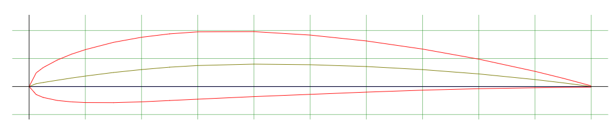
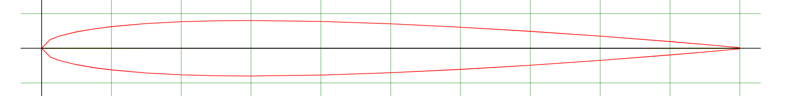
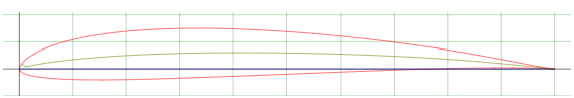

Hrist半環翼固定翼機
V 尾、拉進式的半環翼機，兩顆馬達裝在機翼上的莢艙前端。翼型研究、CFD 批次模擬、飛行模擬模型都是為了它做的。CFD 跑在家裡自己架的 Ubuntu 伺服器上，結果整理成氣動表接進 JSBSim，再到 FlightGear 裡飛。機身預留了 DJI O4 的相機座。
目前是 C7 版：莢艙回到 C4 的高度、莢艙機鼻縮短改成斜面，馬達下傾 10°，起落架沿用 C5 的鋼絲腳架。
- 翼型研究完成
- CFD 批次模擬進行中
- 飛行模擬模型（C7）完成
- 機體 CAD進行中
SOLIDWORKS · XFOIL · XFLR5 · OpenFOAM · JSBSim · FlightGear · Blender · Python
- 目前版本
- C7（2026.10.30）
- 佈局
- 半環翼 · V 尾 · 雙發拉進
- 馬達
- 下傾 10°
- 半環翼翼型
- NACA0008 · SD7037
- V1 主翼
- 1.75 × 0.22 m · NACA 4412
- CFD
- simpleFoam · k-ω SST
- C7 網格
- 669,473 cells
- C7 中性點
- 距機鼻 235.1 mm
- 機身散熱
- 15 m/s 時 6.5 L/s
- 早期掃描
- o4r 版 · 5–20 m/s · α −4° ~ 36°
- 模型轉換
- STEP → FreeCAD → Blender → FlightGear
CFD · C7 · 攻角 4° · 15 m/sSurface Cp / streamlines
LOADING…
- V∞
- 15 m/s
- α / β
- 4° / 0°
- PROP
- off
- MODEL
- RANS k-ω SST
- MESH
- 669k cells
- CL
- 0.226
- CD
- 0.0503
- L/D
- 4.48
機身表面 Cp（藍＝吸力，橘紅＝壓力）−10+1
流線：流速比 |U| / V∞（綠＝跟來流一樣快）01.4


